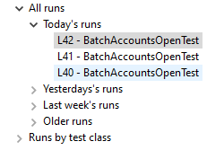
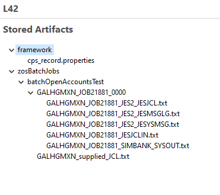

BatchAccountsOpenTest
This test uses the z/OS Batch Manager (which in the background, invokes z/OSMF) to add a set of accounts to the Galasa SimBank system via a z/OS batch job. The SimBank Batch Accounts Open test is available in the Galasa simplatform repository in GitHub.
When you installed Galasa, some of the configuration information set in the overrides.properties file is specific to the z/OSMF and z/OS Batch Managers. Confirm that the file - it's located in your .galasa folder - contains, in its entirety:
zos.dse.tag.SIMBANK.imageid=SIMBANK
zos.dse.tag.SIMBANK.clusterid=SIMBANK
simbank.dse.instance.name=SIMBANK
simbank.instance.SIMBANK.zos.image=SIMBANK
zos.image.SIMBANK.ipv4.hostname=127.0.0.1
zos.image.SIMBANK.telnet.port=2023
zos.image.SIMBANK.telnet.tls=false
zos.image.SIMBANK.credentials=SIMBANK
zosmf.server.SIMBANK.images=SIMBANK
zosmf.server.SIMBANK.hostname=127.0.0.1
zosmf.server.SIMBANK.port=2040
zosmf.server.SIMBANK.https=false
For brevity, package declarations and imports are omitted in the following walkthrough.
Walkthrough - BatchAccountsOpenTest¶
First, some Managers are declared, including a new Manager - ZosBatch and a related annotation and interface ZosBatchJobname.
@ZosBatch(imageTag = "SIMBANK")
public IZosBatch zosBatch;
@ZosBatchJobname(imageTag = "SIMBANK")
public IZosBatchJobname zosBatchJobname;
batchOpenAccountsTest() method is specified. It starts off by assembling a List<String> of account Strings - each such String contains an account number, a sort code and an initial credit, separated by commas:
// Create a list of accounts to create
List<String> accountList = new LinkedList<>();
accountList.add("901000001,20-40-60,1000");
accountList.add("901000002,20-40-60,1000");
accountList.add("901000003,20-40-60,1000");
accountList.add("901000004,20-40-60,1000");
accountList.add("901000005,20-40-60,1000");
accountList.add("901000006,20-40-60,1000");
accountList.add("901000007,20-40-60,1000");
accountList.add("901000008,20-40-60,1000");
accountList.add("901000009,20-40-60,1000");
A HashMap called parameters is instantiated, associating ACCOUNT_OPEN with the key CONTROL, and the concatenated list of accounts (each item terminated by '\n') with the key DATAIN.
// Create the substitution parameters for the JCL
HashMap<String, Object> parameters = new HashMap<>();
parameters.put("CONTROL", "ACCOUNT_OPEN");
parameters.put("DATAIN", String.join("\n", accountList));
The HashMap will eventually deposit its contents in the designated substitution variables (++CONTROL++ and ++DATAIN++) located in some skeletal JCL stored in /src/main/resources/skeletons/SIMBANK.jcl:
// Load the JCL with the given substitution parameters
InputStream inputStream = resources.retrieveSkeletonFile("/resources/skeletons/SIMBANK.jcl", parameters);
String jcl = resources.streamAsString(inputStream);
jcl contains:
//SIMBANK EXEC PGM=SIMBANK
//SYSOUT DD SYSOUT=*
//CONTROL DD *
ACCOUNT_OPEN
//DATAIN DD *
901000001,20-40-60,1000
901000002,20-40-60,1000
901000003,20-40-60,1000
901000004,20-40-60,1000
901000005,20-40-60,1000
901000006,20-40-60,1000
901000007,20-40-60,1000
901000008,20-40-60,1000
901000009,20-40-60,1000
// Submit the JCL
IZosBatchJob batchJob = zosBatch.submitJob(jcl, zosBatchJobname);
// Wait for the batch job to complete
logger.info("batchJob.toString() = " + batchJob.toString());
int rc = batchJob.waitForJob();
// If highest CC was not 0, fail the test
if (rc != 0) {
// Print the job output to the run log
batchJob.retrieveOutput().forEach(jobOutput -> logger.info(
"batchJob.retrieveOutput(): " + jobOutput.getDdname() + "\n" + jobOutput.getRecords() + "\n"));
Fail.fail("Batch job failed RETCODE=" + batchJob.getRetcode() + " Check batch job output");
}
logger.info("Batch job complete RETCODE=" + batchJob.getRetcode());
By using the concepts introduced in this example, you can write your own z/OS Batch Manager tests.
The z/OS Batch Manager stores the job output in the test results main archive store.
Reviewing the stored artifacts in Eclipse¶
When BatchAccountsOpenTest has finished running, you can expand the relevant entry in the Galasa Results tab - if it is not initially visible, choose Galasa > Initialise Galasa Framework and then Window > Show View > Other and finally, Galasa Results.
For example, your Galasa Results tab might resemble:

Double-click on a run and you can explore the three tabs in the main pane:
- General: presenting some useful overview metrics about the run, and its payload of tests and test classes
- Run Log: which stores the console messages emitted by Eclipse as the test ran, which end with the following lines signifying test success:
****************************************************************************************************
*** Passed - Test method dev.galasa.simbanks.tests.BatchAccountsOpenTest#batchOpenAccountsTest,type=Test
****************************************************************************************************
28/01/2020 09:31:53.738 INFO dev.galasa.framework.TestClassWrapper.runTestMethods - Ending
****************************************************************************************************
*** Passed - Test class dev.galasa.simbanks.tests.BatchAccountsOpenTest
****************************************************************************************************
- Stored Artifacts: which contain a variety of detailed test-related outputs - the specifics are determined by the writer of the z/OS Batch Manager in this case.

The outputs include the constructed input JCL and several of the usual JES batch output datasets.
BatchAccountsOpenTest - full source listing
package dev.galasa.simbanks.tests;
import java.io.IOException;
import java.io.InputStream;
import java.util.HashMap;
import java.util.LinkedList;
import java.util.List;
import org.apache.commons.logging.Log;
import org.assertj.core.api.Fail;
import dev.galasa.Test;
import dev.galasa.artifact.ArtifactManager;
import dev.galasa.artifact.IArtifactManager;
import dev.galasa.artifact.IBundleResources;
import dev.galasa.artifact.TestBundleResourceException;
import dev.galasa.core.manager.Logger;
import dev.galasa.zos.IZosImage;
import dev.galasa.zos.ZosImage;
import dev.galasa.zosbatch.IZosBatch;
import dev.galasa.zosbatch.IZosBatchJob;
import dev.galasa.zosbatch.IZosBatchJobname;
import dev.galasa.zosbatch.ZosBatch;
import dev.galasa.zosbatch.ZosBatchException;
import dev.galasa.zosbatch.ZosBatchJobname;
@Test
public class BatchAccountsOpenTest {
@ZosImage(imageTag = "SIMBANK")
public IZosImage image;
@ZosBatch(imageTag = "SIMBANK")
public IZosBatch zosBatch;
@ZosBatchJobname(imageTag = "SIMBANK")
public IZosBatchJobname zosBatchJobname;
@ArtifactManager
public IArtifactManager artifacts;
@Logger
public Log logger;
/**
* Test which uses the SIMBANK batch job to open a number of new accounts. The
* test passes if the job completes successfully (RC=0000)
*
* @throws TestBundleResourceException
* @throws IOException
* @throws ZosBatchException
*/
@Test
public void batchOpenAccountsTest() throws TestBundleResourceException, IOException, ZosBatchException {
// Create a list of accounts to create
List<String> accountList = new LinkedList<>();
accountList.add("901000001,20-40-60,1000");
accountList.add("901000002,20-40-60,1000");
accountList.add("901000003,20-40-60,1000");
accountList.add("901000004,20-40-60,1000");
accountList.add("901000005,20-40-60,1000");
accountList.add("901000006,20-40-60,1000");
accountList.add("901000007,20-40-60,1000");
accountList.add("901000008,20-40-60,1000");
accountList.add("901000009,20-40-60,1000");
// Create the substitution parameters for the JCL
HashMap<String, Object> parameters = new HashMap<>();
parameters.put("CONTROL", "ACCOUNT_OPEN");
parameters.put("DATAIN", String.join("\n", accountList));
// Load the JCL with the given substitution parameters
IBundleResources resources = artifacts.getBundleResources(this.getClass());
InputStream inputStream = resources.retrieveSkeletonFile("/resources/skeletons/SIMBANK.jcl", parameters);
String jcl = resources.streamAsString(inputStream);
// Submit the JCL
IZosBatchJob batchJob = zosBatch.submitJob(jcl, zosBatchJobname);
// Wait for the batch job to complete
logger.info("batchJob.toString() = " + batchJob.toString());
int rc = batchJob.waitForJob();
// If highest CC was not 0, fail the test
if (rc != 0) {
// Print the job output to the run log
batchJob.retrieveOutput().forEach(jobOutput -> logger.info(
"batchJob.retrieveOutput(): " + jobOutput.getDdname() + "\n" + jobOutput.getRecords() + "\n"));
Fail.fail("Batch job failed RETCODE=" + batchJob.getRetcode() + " Check batch job output");
}
logger.info("Batch job complete RETCODE=" + batchJob.getRetcode());
}
}